评级说明
配套视频：【命运 2】购物清单 紫枪部分杂谈
在不同场景下，不同武器的推荐分级会出现变化。主要区分场景：高难宗师、副本清怪／机制、副本输出。伤害 DPS 参考武器框架页。
T0：无替代性，独一档
T1：强力，不错的选择
T2：能用
T3：一般
T4：不建议使用
为了更精细化评级，会出现 T0.5／T1.5 的小数点评级。评级只是为了提供衡量强度的标准，请勿上纲上线。不会出现 PVP 枪，不会出现基本没有用途的枪。
如何衡量一把武器的价值？
清怪／高难宗师等：
①武器形态优秀，对精准伤害要求不高
②武器伤害合格
③武器弹药经济优秀：弹药生成属性高，每盒弹药总伤高
④功能性：技能回转（超凡／大招），硬减软减获取，高频率 dot，辅助队友（奶枪／切割／疲惫）……
输出：
①伤害高：DPS 高，切换 DPS 高
②总伤高
③爆发高
④功能性：劫子弹，高频率 dot，技能回转……
冲击支撑如果不带神器废墟石板的不稳定神枪手和 NPA 的不稳定流动，则一定要和不稳定弹药 Perk 搭配。面对怪的 DPS 从高到低：手枪、手炮、自动步枪／脉冲／弓箭、斥候、微冲。在有 vog 套的情况下比起羸弱能量球会更倾向带增伤 Perk。
动能武器：如果不反感 pve 打精准的话，可以尝试萤火虫+墓碑，萤火虫可以自动碎掉墓碑的冰块造成高伤范围爆炸，而萤火虫又是火属性武器伤害，就实现了一把枪触发预言 4 的抵抗 3 效果和回复 16% 近战手雷能量，携带药剂师或女王香炉的迎接风暴还可以同时射出减速弹片，也可利用寒风凛凛获取冰霜护甲。
通常动能和虚空是最佳的清怪传说白弹：虚空因为不稳定弹药给予的清怪能力，冲击支撑给予的生存能力，动能因为羸弱能量球+动能震颤和天生的对非战斗人员有天生的 15% 增伤。
火箭脉冲
类型评级 T0。命运 2 最强的清怪武器，有着最完美的武器形态，存在双绿 bug 不会减少拾取的子弹，不适合输出
参考数值：DPS 2898 · 总伤 39562
| 武器 | 图标 | 评级 | 框架 射速 |
属性 | 勇士 | Perk 三号位 | Perk 四号位 | 获取地点 | DPS | 总伤 | 切换 DPS | 备注 | 评级理由 |
|---|---|---|---|---|---|---|---|---|---|---|---|---|---|
| 完美逆行 | T0 | 微型导弹框架 55 | 缚丝 | 回转弹药/沙场备战 信标弹药 | 元素磨砺/武器大师 切割（旧版） 狂乱 连锁反应 | 巅峰 先锋 | 豪华的 perk 池，不错的起源特性，存在 bug 能够同时吃到自己和副手的回收一盒强化弹药回 7 发，利用这个特性打本时可以用作捡绿弹武器，顶级的弹药经济武器，切割是非常优秀的 perk，适合猎人和汇编腿术士使用 | ||||||
| 韦兰迪夫-D | 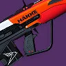 | T0 | 微型导弹框架 55 | 烈日 | 空中扳机 治疗弹匣 爆破分配器 | 超因果亲和/聚合充能 辉耀炽热 铤而走险 | 赛雀联赛 | 最好最常用的副手清怪枪，perk 池优秀，三号位有顶级清怪 perk 空中扳机，操作手感极佳，起源特性加快奔跑速度。 注意副手火箭脉冲不吃回收 | |||||
| Ψ永恒 IV | T1 | 微型导弹框架 55 | 电弧 | 涓流充能 爆破分配器 信标弹药 | 元素磨砺 我为人人 肾上腺素成瘾 | 高塔纪念碑火力战队 萨瓦拉 | perk 池一般，大部分情况会优先选择火脉冲 注意副手火箭脉冲不吃回收 |
榴弹发射器
类型评级 T0。区域拒止和微型导弹在榴弹这个大家庭中各据半壁，其他框架几乎没有出场空间
| 武器 | 图标 | 评级 | 框架 射速 |
属性 | 勇士 | Perk 三号位 | Perk 四号位 | 获取地点 | DPS | 总伤 | 切换 DPS | 备注 | 评级理由 |
|---|---|---|---|---|---|---|---|---|---|---|---|---|---|
| 区域拒止 T0 DPS 630 总伤 75585 切换 DPS 8398：优秀的武器形态，高频率 dot，高总伤，高弹药生成，反过载，神器红利，让他在多个领域都有高光用途：快速攒超凡，配合神器获取减伤，速通常用的配合元素超充攒大招，刷子弹，输出时补伤害 6s 切一次的伤害吃满其实总伤比山巅还要高，突破清场挂虚弱，松身裤快速回转闪身，快速叠加电光充能层数 | |||||||||||||
| 驱逐引擎 | 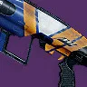 | T0 | 区域拒止框架 72 | 冰影 | 自填 空中扳机 | 混沌重塑 聚合充能 | 巅峰 先锋 | 驱逐引擎和迷失信号是两把面对大部分玩家的最强榴弹，药剂神器风寒（寒风凛凛）是最简单获取高额减伤的来源，而冰粪坑作为高频率 dot 单弹匣武器可以快速叠加冰霜护甲，这套思路在高难宗师和压力环境输出都是 T0 级别，有减速时也可以快速产出冰影碎片。 迷失信号因为三号位的金中藏弹给予的弹药经济多在宗师使用；驱逐引擎因为四号位的优秀增伤和起源特性多在地牢 raid 中使用 | |||||
| 迷失信号 | T0 | 区域拒止框架 72 | 冰影 | 金中藏弹 | 爆破专家 我为人人 高地 | 安可 | |||||||
| 庆典飞行 | 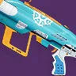 | T0 | 区域拒止框架 72 | 缚丝 | 切割 爆破专家 嫉妒军械库 | 羸弱能量球 元素磨砺 斩首 | 至日 | 庆典飞行因为切割能量球的 perk 组合，适合配合崩解获取织造铠甲和施加拆解，由于拆解可以协助释放电光充能，所以非常适合电泰坦和忍野手电猎等类似玩法，因为和岁时之巅同样获取来源于高塔纪念碑，是新手最好获得的松身裤组件，但强度和弹药经济都是药剂师迷失信号更优 | |||||
| VS 速度指挥 | 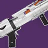 | T0.5 | 区域拒止框架 72 | 虚空 | 重建 冲击支撑 爆破专家 嫉妒军械库 | 羸弱能量球 不稳定弹药 狂乱/诱导/元素磨砺 | 晚星之主 | 优秀的 perk 池和起源特性，特点在于能够高频触发不稳定弹药清怪和触发不稳定神枪手回转职业技能，常用于觅敌矛隼猎和星云之歌术士 | |||||
| 送魂者 | T0.5 | 区域拒止框架 72 | 电弧 | 自填 即兴弹药 爆破专家 爆炸分配器 | 羸弱能量球 伏特子弹 任意合适增伤 | 异端深渊 | 顶级 perk 池和原始特性 | ||||||
| 铭纹-41 | 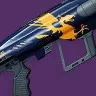 | T1 | 区域拒止框架 72 | 烈日 | 自填 治疗弹匣 | 羸弱能量球 二元轨道 斩首/武器大师 辉耀炽热 | 高塔纪念碑 班西 | 所有区域拒止榴弹中最平庸的 perk 池和起源特性，会用在石板元素超充器转火系大招和千语松身裤挂突破清场 | |||||
| 微型导弹 T0 总伤 57426 切换 DPS 4603：最常用作山巅跳跑图，顶级的切换 DPS | |||||||||||||
| 机巧纬线 | 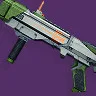 | T0 | 微型导弹框架 35 | 缚丝 | 空中扳机 嫉妒军械库 滑行射击 | 双脚架 聚合充能/元素磨砺 诱导推销 | 高塔纪念碑 | 顶级 perk 池和原始特性，山巅跳跑图有空板+双脚架，输出有嫉妒军械库+聚合是其他两把榴弹无法逾越的大山 | |||||
| 经纬仪 | T1 | 微型导弹框架 35 | 电弧 | 重建 | 元素磨砺 狂乱 | 高塔纪念碑 萨瓦拉 | 唯一的一把副手山巅 | ||||||
| 波形 T2：在一些平光本可以用作清怪，出现在一些 raid 长直道速通，拼好牢活动中的冰波形重力井曾经经常用来收集子弹，可惜的是如今已经绝版，但现在有 pvp2 件套代替出场率会降低 | |||||||||||||
| 新太平洋碑文 | 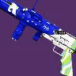 | T2 | 波形框架 40 | 冰影 | 空中扳机/金中藏弹 连锁反应 爆破专家 | 转向 杀戮弹匣/收割者贡品 | 深渊机灵 | 优秀的 perk 池。适合药剂包，拼好牢绝版版本有重力井 | |||||
| 自制 | 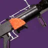 | T2 | 波形框架 40 | 电弧 | 转向 空中扳机 爆破专家 | 伏特子弹 我为人人/狂乱 连锁反应 泉源 | 猛攻 | 优秀的 perk 池和起源特性，有门徒和猛攻两个版本，推荐猛攻版本 | |||||
| 双重火力 T3 总伤 55819 切换 DPS 5236：最好的致盲榴弹框架，但是现在绝大部分场景都没有致盲榴弹的上场空间了，嫉妒军械库可用于三切补输出，然而双发实战极易打空，所以几乎不会在任何场景见到他的出场。狂野飞禽拼好牢版本有重力井，已经绝版 | |||||||||||||
| 狂野飞禽 | T2.5 | 双重火力 30 | 虚空 | 自填 嫉妒军械库 | 枯萎凝视 聚合充能/诱导推销 元素磨砺 | 守望者尖塔 | 顶级 perk 池和原始特性，旧版本有金中藏弹和重力井已绝版 | ||||||
| 礼拜 | T2.5 | 双重火力 30 | 冰影 | 滑行健射 嫉妒军械库 | 金中藏弹 冰冷弹匣 | 世界 | 现存唯一可刷取的金中双发致盲榴弹 | ||||||
| 轻质 T4：最意义不明的框架，双发榴弹在现版本几乎没有用处然而也是是他的纯上位 | |||||||||||||
| 拯救者的喝彩 | T3 | 轻质框架 35 | 电弧 | 涓流充能 | 换挡 | 巅峰 先锋 | 3422 | 43373 | 涓流充能+换挡一直射很好玩，DPS 比融合高但总伤太低 | ||||
霰弹枪
类型评级 T0。最好的近身伤害武器，散射框架之间各有其优势区间，独头框架整体劣势
| 武器 | 图标 | 评级 | 框架 射速 |
属性 | 勇士 | Perk 三号位 | Perk 四号位 | 获取地点 | DPS | 总伤 | 切换 DPS | 备注 | 评级理由 |
|---|---|---|---|---|---|---|---|---|---|---|---|---|---|
| 攻击 T0：虽然比最顶级 DPS 的速射和轻质略低，但是有唯一一把真正的顶级双增伤喷子裁决定论。最好的弹药经济：高总伤和高弹药盒总伤。 | |||||||||||||
| 裁决定论 | T0 | 攻击型框架 60 | 电弧 | 聚合充能 | 战嚎炮管 元素磨砺 | 玻璃拱顶 | 5398 | 108395 | 电弧复合 | 顶级 perk 池和原始特性，最强输出绿弹之一，常与混乱无序和驱逐引擎搭配输出，宗师警戒等高难本也常有他的身影，强度堪比大帝喷，俗称小帝喷 | |||
| 猝死 | 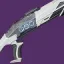 | T0.5 | 攻击型框架 60 | 虚空 | 雪上 重建 | 集体行动 元素磨砺 战嚎炮管 | 预言 | 雪上+任意增伤的组合在如今版本多见于冰猎忠诚面具的组合，碎片刺激的低语弥补了填装需求，冰飞镖本身也有一定的伤害和清怪能力 | |||||
| 最后生存者 | 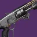 | T1 | 攻击型框架 60 | 烈日 | 盗墓者/金中藏弹 | 战嚎炮管 | 智谋 | 边打边跑原始特性可以在击杀后部分填装弹匣 | |||||
| 速射 T0：霰弹枪最强的输出 DPS 框架，动能合成的最大受益者之一，雪上加霜打拳的最常用框架，但在没有动能合成时，是每盒弹药总伤最低的框架之一，在宗师警戒等高难副本弹药经济较差 | |||||||||||||
| 威胁等级 | T0 | 速射框架 140 | 动能 | 级联点 雪上 | 全明星 战壕 | 众神殿 | 接近无限 | 7087 (级联点) | 动能合成 | 顶级 perk 池和原始特性，最强输出绿弹之一，吃满动能合成红利的喷子，有寄生虫双发独头喷+级联点全明星搭配 pvp2 件套的顶级 dps，高难下本还有缩影+级联点全明星。注：双排锻炉眷属存在 bug，反复切换原始特性可以大幅提高持续时间 | |||
| 完美悖论 | T0 | 速射框架 140 | 动能 | 阻止力/威胁探测 拳击手/威胁移除器 沙场备战（旧版） | 雪上加霜/全明星 战嚎炮管 | 世界 班西（旧版） | 4126 | 接近无限 | 动能合成 | 光照无影是霰弹枪最顶级的原始特性，让他成为最好用的打拳喷 阻止力+全明星是无脑摁射输出的优秀选择 | |||
| 固定低音 | 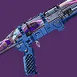 | T0 | 速射框架 140 | 虚空 | 盗墓者 | 雪上加霜 战嚎炮管 | 海王星 | 原始特性小火箭作为免费的额外伤害，和推推炮同属性 | |||||
| IKELOS_SG_v1.0.3 | T1 | 速射框架 140 | 烈日 | 盗墓者 | 雪上加霜 战嚎炮管 | 炽天使 | 最主要用作打拳，只要有雪上加霜和合适的填装 perk 就没有问题 | ||||||
| 弑神者 | 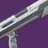 | T1 | 速射框架 140 | 电弧 | 自填 金中藏弹 | 雪上加霜 战嚎炮管 | 涅索斯 | 虽然没有盗墓者，但是起源特性可以拿到双倍弹匣非常合适 | |||||
| 一小步 | 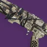 | T1 | 速射框架 140 | 冰影 | 盗墓者 金中藏弹 | 雪上加霜 战嚎炮管 | 月球 | 完美悖论下位，可以补充暗影条 | |||||
| 精密 T0.5：精密实际上是攻击喷的全面弱化版，但是他的弹药生成比攻击高弥补了部分不足，给到这么高的评级理由是他是在高难本中最好的反屏障紫绿弹，在如此缺少反屏障手段的最终版本出场率甚至高于攻击喷 | |||||||||||||
| 末日先知 | 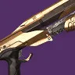 | T0 | 精密框架 70 | 电弧 | 空中扳机 嫉妒军械库 重建/超充弹匣 | 战嚎炮管 换挡 | 花园 | 3328 | 55236 | 顶级三号位和最好的反屏障原始特性，混乱无序强度红利 | |||
| 斗牛士 64 | 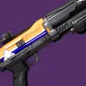 | T0.5 | 精密框架 70 | 电弧 | 金中藏弹 超充弹匣 | 雪上加霜 换挡/集体行动 | 贪婪之握 | 最好的副手反屏障打拳喷，适合冰泰坦飞蛾术使用 | |||||
| 碎晶石 | T0.5 | 精密框架 70 | 冰影 | 金中藏弹 雪上加霜 | 战嚎炮管 | 破碎王座 | 忠诚面具冰猎可用（碎晶石+裁决定论+混乱无序） | ||||||
| 玫瑰罗盘 | T0.5 | 精密框架 70 | 烈日 | 盗墓者 | 战嚎炮管 | 至日 | |||||||
| 轻质 T0.5：轻质的 DPS 比速射略低，总伤和弹药经济比速射略高，星界虚无在副手的伤害仅次于裁决定论之下，有部分人会喜好轻质喷打拳的手感 | |||||||||||||
| 星界虚无 | 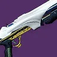 | T0.5 | 轻质框架 90 | 烈日 | 回转弹药 金中藏弹 嫉妒军械库 | 聚合充能/元素磨砺 战嚎炮管 雪上加霜 诱导推销 | 沙漠 | 4314 | 52680 | 顶级 perk 池和原始特性，可搭配驱逐引擎和寄生虫打三切，高难也可使用，回转弹药可直接喷完 | |||
| 异蚀 IV | T1 | 轻质框架 90 | 电弧 | 盗墓者 自填 金中藏弹 | 雪上 战嚎炮管 | 先锋 | |||||||
| 重型点射 T2：本身是所有喷子中最高的总伤，有事不过四的加持会更夸张，DPS 与精密喷接近，但因为要贴脸打精准，完全比不过同类收益，由于只需要两发就可以触发级联点会作为威胁等级的触发器 | |||||||||||||
| 奥术之拥 | T2 | 重型点射 150 | 电弧 | 事不过四 重建/嫉妒刺客 | 聚合充能 精准工具 | 至日 | 3256 | 104727 | 突破清场填装 | 事不过四有极高总伤，电属性适合药剂包神器 | |||
| 纯粹回忆 | T3 | 重型点射 150 | 虚空 | 嫉妒军械库 | 诱导推销 枯萎凝视 | 熔炉 | 枯萎凝视有点意思，但是没有太多运用空间 | ||||||
| 精确重击 T3：DPS 与重型点射相近，总伤比重型点射低，但是有很夸张的转向双增伤，暂时没有太多应用场景 | |||||||||||||
| 遗产 | T1 | 精确重击框架 70 | 动能 | 转向 | 聚合充能/级联点 重组 | 深岩墓室 | 10610 | 动能合成 | 全游戏最高的单弹匣爆发 DPS，转向+重组的组合很有意思 | ||||
| 无声 | 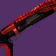 | T2 | 精确重击框架 70 | 虚空 | 转向 | 元素磨砺（绝版） 诱导推销 斩首 | 分离教义 | 6691 | 78028 | ||||
| 速射重弹 T4：总伤、DPS 都是全霰弹枪中最低的存在 | |||||||||||||
| 龙䲢 | T4 | 速射重弹 95 | 冰影 | 快速命中 金中藏弹 | 精准工具 冰冷弹匣 | 高塔纪念碑 | 3175 | 55573 | |||||
狙击
类型评级 T0。最好的远距离输出武器，会用来打一些机制部位(机制狙只需要斩首 perk 并且用的顺手即可)，除了一骑绝尘的热能框架狙，速射/适配/攻击的 DPS 几乎持平，主要看 perk，手感之间的区别；高冲 DPS 略低但总伤高到不现实。
由于大部分情况队伍中不会选择达西，所以伤害数据并不包含达西 15% 增伤
| 武器 | 图标 | 评级 | 框架 射速 |
属性 | 勇士 | Perk 三号位 | Perk 四号位 | 获取地点 | DPS | 总伤 | 切换 DPS | 备注 | 评级理由 |
|---|---|---|---|---|---|---|---|---|---|---|---|---|---|
| 阴谋淬砺 | T0 | 动态热量武器 140 | 冰影 | 斩首 | 火线 诱导推销 | 平衡 | 5637 | 77313 | 狙击手冥想 | 顶级框架顶级原始特性优秀 perk 池，速射射速攻击伤害，命运 2 最优秀的精准输出绿弹，需要学习触发动态热量限制器的手法，最好要电离散热器和大师散热，武器模组专家散热 | |||
| 普莱蒂斯的复仇 | 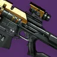 | T0 | 速射框架 140 | 动能 | 动能震颤/事不过四 | 全明星/元素磨砺 | 玻璃拱顶 | 4147 | 接近无限 | 狙击手冥想 | 顶级 perk 池顶级原始特性，除了本身不错的输出能力，动能震颤+全明星的组合也是非常优质的过机制狙击 | ||
| 舵手 | T0 | 高冲击力框架 35 | 电弧 | 光之触碰 速射瞄准 | 元素磨砺/换挡 斩首 | PVP | 3667 (疾跑取消后摇) | 200983 | 狙击手冥想 /电弧复合 | 虽然 DPS 比其他框架略低，但其高到不现实的总伤可以在一些大长轴搭配混乱无序使用，单发伤害高，是优秀的副手机制狙，有疾跑取消换弹后摇的手法，注意高爆载荷会减少伤害通常不建议使用 | |||
| 巴拉巴拉 | 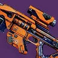 | T1 | 攻击型框架 72 | 动能 | 三连击 | 全明星/元素磨砺 转向 | 高塔纪念碑 萨瓦拉 | 6403 4867 | 74682 接近无限 | 转向 元素磨砺 狙击手冥想 | 使用场景局限。宝库狙的攻击框架版本，在有加速突击的情况 DPS 比宝库狙高，用转向时配合加速突击是伤害最高的狙击，但考虑到加速突击已经绝版并且大部分人不会喜欢攻击框架的手感略微降低评级 | ||
| 拥抱身份 | 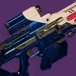 | T1 | 适配框架 90 | 虚空 | 斩首 | 转向 聚合充能/元素磨砺 | 苍白之心 | 5670 | 64828 | 斩首转向 狙击手冥想 | 使用场景局限。顶级 perk 池，由于巴拉巴拉加速突击绝版所以斩首+转向是目前能刷到的最高伤害狙击，但是绝大部分情况不会有人喜欢叠转向 替代：贪婪狙 | ||
| IKELOS_SR_v1.0.3 | 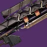 | T1 | 速射框架 140 | 烈日 | 事不过四 | 聚焦狂怒 | 炽天使 | 3290 | 104301 | 狙击手冥想 燃烧狙击子弹 | 燃烧狙击子弹+狙击手冥想非常适合火速射狙的发挥 替代：花园狙 注：聚焦狂怒比精准工具总增伤高 | ||
| 继承 | T1 | 攻击型框架 72 | 动能 | 重建 | 斩首 重组 元素磨砺 | 深岩墓室 猛攻 | 老牌好用机制狙，地窖和猛攻 perk 池不同 | ||||||
| 宁静 | 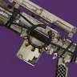 | T1.5 | 适配框架 90 | 动能 | 回转弹药 | 动能震颤 转向 全明星/元素磨砺 | 月球 | 反屏障狙，动能震颤是常规选择，转向在类似花园秒九头蛇等地有特殊作用 | |||||
| 转瞬长矛 | 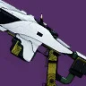 | T1.5 | 速射框架 140 | 缚丝 | 事不过四 金中藏弹 | 解构 元素磨砺 转向 | 沙漠 | 事不过四解构拆机甲很快，在终极炽天使速通中有出现 |
热能手炮
类型评级 T2。在增伤被砍后，配合幸运裤电弧复合输出的伤害还算可以，但更多被用在打机制和叠加单人特工层数上
单次切换总伤和 DPS
不包含电弧复合
| 武器 | 图标 | 评级 | 框架 射速 |
属性 | 勇士 | Perk 三号位 | Perk 四号位 | 获取地点 | DPS | 总伤 | 切换 DPS | 备注 | 评级理由 |
|---|---|---|---|---|---|---|---|---|---|---|---|---|---|
| 无礼言论 | 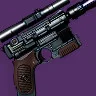 | T2 | 动态热量武器 180 | 电弧 | 空中扳机 冷却饰品 | 精准工具 狂乱 | 无序边界 | 36488 | 5658 | 仅此一把，注意现在是否用血色浪漫叠层伤害区别不大，空扳连射 18 发需要加速突击散热全中的无礼言论，可以用 vog4 冷却饰品补足 |
追踪
类型评级 T2。在有严酷折射的加持下，缚丝和虚空因为上 buff 简单都具备一定的清怪能力，在 raid 和地牢中通常承担劫子弹和打机制的角色
参考数值：DPS 2258 · 总伤 154783
事不过四
| 武器 | 图标 | 评级 | 框架 射速 |
属性 | 勇士 | Perk 三号位 | Perk 四号位 | 获取地点 | DPS | 总伤 | 切换 DPS | 备注 | 评级理由 |
|---|---|---|---|---|---|---|---|---|---|---|---|---|---|
| 无誓 | 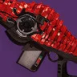 | T0.5 | 适配框架 900 | 缚丝 | 边打边劫 回转弹药 | 混沌重塑 元素磨砺 | 分离教义 | 顶级 perk 池顶级原始特性，缚丝对于严酷折射又是顶级属性，配合拆解能量球轻松触发，打本时可以清怪（特别是卡巴尔盾哥）、劫子弹、打机制，也是唯一可以下高难本的追踪：清理，反 50 光屏障 | |||||
| 时间食者 | T1.5 | 适配框架 900 | 虚空 | 冲击支撑 边打边劫 | 不稳定弹药 | 安可 | 不稳定弹药配合石板触发不少虚空神器 | ||||||
| 空洞拒绝 | 特殊 | 适配框架 900 | 虚空 | 金中藏弹 | 冲击支撑 击杀记录 | 前兆 | 因为追踪步枪无论拾取任何大小（强化、普通、斥候）的弹药盒都会多给予 10% 备弹的特性，会用来配合完美逆行作为熔炉 2 套捡子弹武器 | ||||||
| 雷电 | T2 | 适配框架 900 | 电弧 | 边打边劫 | 引爆光束/击杀记录 | 守护者游戏 | 最好获得的边打边劫追踪 |
融合
类型评级 T2.5。在喷子如此强势的当下，融合步枪的生存空间被进一步挤压，除了霰弹枪无法触及的中近距离，你都应该优先考虑霰弹枪而不是融合。衡量一把枪的输出是否合格，就要看他的伤害是否在融合之上，只建议使用高冲/精密/速射
| 武器 | 图标 | 评级 | 框架 射速 |
属性 | 勇士 | Perk 三号位 | Perk 四号位 | 获取地点 | DPS | 总伤 | 切换 DPS | 备注 | 评级理由 |
|---|---|---|---|---|---|---|---|---|---|---|---|---|---|
| 高冲 T2：融合中最好的框架，DPS、总伤、射程都是融合中最高的，唯一缺点是手感不好 | |||||||||||||
| 睿智责难 | T2 | 高冲击力框架 | 电弧 | 丰盈满溢 | 受控连射 洪涝 | 铁旗 | |||||||
| 隐士 | 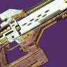 | T2 | 高冲击力框架 | 烈日 | 嫉妒刺客 | 受控连射 洪涝 | 仄锻造 | 2979 | 85266 | ||||
| 夜神长存 V | T2 | 高冲击力框架 | 缚丝 | 嫉妒刺客 | 受控连射 | 世界 | |||||||
| 冰川矿物 | 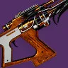 | T2 | 高冲击力框架 | 虚空 | 丰盈满溢 嫉妒刺客 | 受控连射 洪涝 | 曙光节 | 绝版 | |||||
| 既定观点问题 | 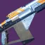 | T2 | 高冲击力框架 | 电弧 | 丰盈满溢 嫉妒刺客 | 受控连射 洪涝 | 萨瓦拉 | 先锋球声望 bug 不好获得 | |||||
| 精密 T2.5：总伤仅次于高冲，DPS 处于中间水平，因为反屏障在高难本可以作为精密喷的下位替代 | |||||||||||||
| 主原料 | T2 | 精密框架 | 电弧 | 涓流充能 金中藏弹 | 换挡 洪涝 | 火力战队 先锋 | 2989 | 82701 | 加速突击+涓流充能+换挡是所有融合中的最高 DPS 金中藏弹+洪涝/换挡，可让松身裤猎人使用 | ||||
| 渐速音-42 | 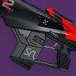 | T2 | 精密框架 | 缚丝 | 丰盈满溢 切割 | 聚合充能/受控连射 腹背受敌 洪涝 | 赛雀联赛 | perk 池非常不错 | |||||
| 轴向缺漏 | 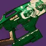 | T2 | 精密框架 | 烈日 | 重建 | 洪涝 腹背受敌 | 苍白之心 | ||||||
| 插头一号 | 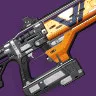 | T2 | 精密框架 | 电弧 | 重建 | 洪涝 | 萨瓦拉 | ||||||
| 解脱 | 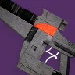 | T3 | 精密框架 | 冰影 | 冰冷弹匣 | 门徒誓约 | 三反，但为了三反带一把不好用的枪是本末倒置，绝大部分情况不会考虑 | ||||||
| 速射 T2.5：DPS 比高冲略低，总伤和射程都远低于高冲，但凭借崭新的 perk 池和加速突击让 DPS 与高冲几乎持平，偏爱速射手感可以使用 | |||||||||||||
| 零镇静 | 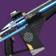 | T2.5 | 速射框架 | 虚空 | 丰盈满溢/重建 嫉妒军械库 | 受控连射 元素磨砺 洪涝 | 巅峰 先锋 | 建议获取加速突击版本。perk 池豪华 | |||||
| 激流 | 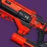 | T2.5 | 速射框架 | 冰影 | 丰盈满溢 自动填装枪套 | 受控连射 冰冷弹匣 | 熔炉 | 建议获取加速突击版本 | |||||
| 笛卡尔坐标 | 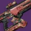 | T2.5 | 速射框架 | 烈日 | 重建 嫉妒军械库 | 聚合充能 受控连射 洪涝 | 欧洲无人区 | 2987 | 57855 | 虽然没有加速突击版本，但是对于速射来说聚合充能比受控连射优秀 | |||
| 迭代循环 | T2.5 | 速射框架 | 电弧 | 超充弹匣 | 受控连射 | 海王星 | 原始特性小火箭额外伤害，但是超充弹匣必须要有增幅获得手段 | ||||||
| 适配/攻击 T3：适配框架与攻击框架拥有最差的 DPS 和总伤，攻击框架的每盒弹药总伤比适配高，但是输在弹药散布和不能反屏障 | |||||||||||||
| 灵巫力量 | 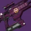 | T3 | 适配框架 | 电弧 | 集体爆破 | 集体行动 | 最后一愿 | 2576 | 57638 | 冰猎适合使用 | |||
| 碎梦者 | 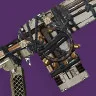 | T3 | 适配框架 | 烈日 | 金中藏弹 重建 | 狂乱 受控连射 | 月球 | 火属性没有玫瑰罗盘可以用 | |||||
| 皇家行刑者 | T3 | 适配框架 | 烈日 | 金中藏弹 嫉妒刺客 | 洪涝 | 阿瓦隆 | 火属性没有玫瑰罗盘可以用，洪涝适合松身裤 | ||||||
| 后见之明 | 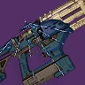 | T3 | 适配框架 | 虚空 | 金中藏弹 | 洪涝 斩首 | 仄 | 虚空属性没有特别好的反屏障绿弹，勉强可用 | |||||
| VS 重力滞止 | 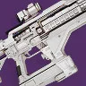 | T3 | 适配框架 | 虚空 | 金中藏弹 | 受控连射 枯萎凝视 | 晚星之主 | 虚空属性没有特别好的反屏障绿弹，勉强可用 | |||||
| 塔霍马 01 | 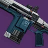 | T3 | 攻击型框架 | 缚丝 | 丰盈满溢 嫉妒刺客 金中藏弹 集体爆破 | 聚合充能/受控连射 洪涝 集体行动 集体拳击 | 扭曲 | perk 池优秀，集体爆破+集体拳击的组合有意思 | |||||
| 回火发电机 | T3 | 攻击型框架 | 电弧 | 丰盈满溢 超充弹匣 回转弹药 | 震颤反馈/换挡 腹背受敌 | 竞技场 | 2799 | 55244 | 因为锻炉眷属原始特性可以和威胁等级缩影一起使用，震颤反馈一发触发 | ||||
| 有限未知 | T3 | 攻击型框架 | 烈日 | 重建 金中藏弹 | 受控连射 洪涝 诱导推销 | 沙漠 | |||||||
火箭手枪
类型评级 T2.5。火箭手枪在清怪方面全方位作为火箭脉冲下位，除了唯一一把顶级边打边劫食莲者没有太多可圈可点之处，但是使用时的舒适度不错
| 武器 | 图标 | 评级 | 框架 射速 |
属性 | 勇士 | Perk 三号位 | Perk 四号位 | 获取地点 | DPS | 总伤 | 切换 DPS | 备注 | 评级理由 |
|---|---|---|---|---|---|---|---|---|---|---|---|---|---|
| 食莲者 | T0（旧） | 微型导弹框架 100 | 虚空 | 边打边劫 | 枯萎凝视 | 仄 | 边打边劫食莲者是全游戏拾取范围最大的工具枪，可惜如今已经绝版 | ||||||
| 食莲者 | T2（新） | 微型导弹框架 100 | 虚空 | 冲击支撑 空中扳机 | 不稳定弹药 狂乱/集体行动 枯萎凝视 | 巅峰 | 不错的 perk 池，有虚空神器搭配 | ||||||
| 极高反射 | T2 | 微型导弹框架 100 | 动能 | 金中藏弹 迷惑爆发 | 全明星 狂乱 重组 辅助炸药 | 木卫二 | 动能 15% 增伤对于清怪枪是先天性优势，迷惑爆发+狂乱很有意思 | ||||||
| 蒙恩 | T2 | 微型导弹框架 100 | 电弧 | 空中扳机 | 伏特子弹 | 战争领主的废墟 | 空中扳机+伏特子弹清很快 | ||||||
| 重现记忆 | T2 | 微型导弹框架 100 | 烈日 | 金中藏弹/治疗弹匣 即兴弹药 | 转向 辉耀炽热 | 熔炉 | 转向在火箭手枪上非常合适。弥补清理乏力的问题，原始特性不错 | ||||||
| 提娜莎精通 | T2.5 | 微型导弹框架 100 | 冰影 | 空中扳机 | 冰冷弹匣 | 铁旗 | 冰冷弹匣现在的作用有限 | ||||||
| 宣召呼唤 | 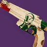 | T2.5 | 微型导弹框架 100 | 缚丝 | 金中藏弹 切割 | 混沌重塑 | 苍白之心 | 混沌重塑是个优秀的 perk |
偃月
类型评级 T2.5。
| 武器 | 图标 | 评级 | 框架 射速 |
属性 | 勇士 | Perk 三号位 | Perk 四号位 | 获取地点 | DPS | 总伤 | 切换 DPS | 备注 | 评级理由 |
|---|---|---|---|---|---|---|---|---|---|---|---|---|---|
| 攻击 T2：偃月最好的框架，最好的弹药经济。适中的弹药生成、护盾持续、DPS | |||||||||||||
| 苍鹭 | T1.5 | 攻击型偃月 60 | 虚空 | 冲击支撑 金中藏弹 | 转向 不稳定弹药 | 高塔纪念碑 | 冲击支撑+转向非常优秀，NPA 神器为其量身定做，相性太好 | ||||||
| 反照率翼 | T2 | 攻击型偃月 60 | 电弧 | 空中扳机 | 伏特子弹 | 高塔纪念碑 | 攻击框架的射速很好地适配了频繁换弹的节奏 注：在弹匣插上时已经可以射击，直接取消换弹后摇 | ||||||
| 倾斜角度 | T2 | 攻击型偃月 60 | 冰影 | 丰盈满溢 金中藏弹 补足神盾 | 冰冷弹匣 | 萨瓦拉 | 应该是目前最好的冰冷弹匣绿弹之一 | ||||||
| 适配 T2.5：最长的护盾持续，适中的每盒弹药总伤，最低的弹药生成和 DPS，高难没有好的反屏障武器会考虑他 | |||||||||||||
| 黄道卷线杆 | 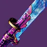 | T2 | 适配偃月 65 | 虚空 | 冲击支撑 | 混沌重塑 枯萎凝视 不稳定弹药 | 单人行动 | NPA 神器适配，枯萎凝视在偃月上非常有意思，也可以搭配邪恶收割 | |||||
| 鲁布瑞之厄 | 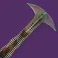 | T2 | 适配偃月 65 | 烈日 | 狂乱 | 混沌重塑 | 门徒誓约 | 优秀的原始特性，狂乱+混沌重塑非常有意思 | |||||
| 拒绝召唤 | T2 | 适配偃月 65 | 缚丝 | 切割 连锁反应 | 混沌重塑 | 异端深渊 | 切割+混沌重塑很有意思，可搭配废墟石板 | ||||||
| 谜团 | 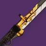 | T2.5 | 适配偃月 65 | 虚空 | 金中藏弹 | 狂乱 | 萨瓦图恩的王座世界 | 高难虚空反屏障没有特别优秀的武器。勉强可用 | |||||
| 速射 T2.5：最高的 DPS 和弹药生成，但是最低的护盾持续和每盒弹药总伤，射速伤害最接近火箭手枪的偃月 | |||||||||||||
| 偏异将临 | T2 | 速射偃月 85 | 虚空 | 冲击支撑 爆破专家 | 混沌重塑 不稳定弹药 | 救赎的边缘 | NPA 神器适配，冲击支撑+混沌重塑很好 | ||||||
| 滑溜运气 | T2 | 速射偃月 85 | 烈日 | 混沌重塑 治疗弹匣 蝴蝶 | 辉耀炽热 连锁反应 盒式呼吸法 余下三个 perk | 深渊机灵 | 三号位混沌重塑的双增伤，辉耀炽热和连锁反应可以触发压制偃月，非常有意思的一把偃月，还有蝴蝶+盒式呼吸法也很有趣 | ||||||